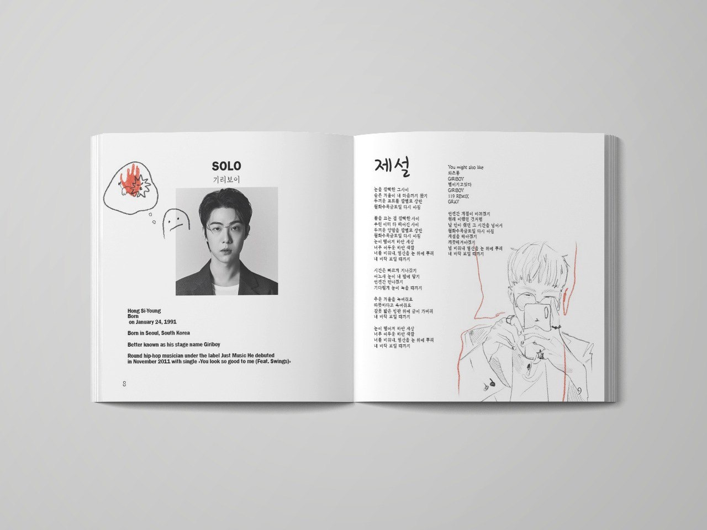
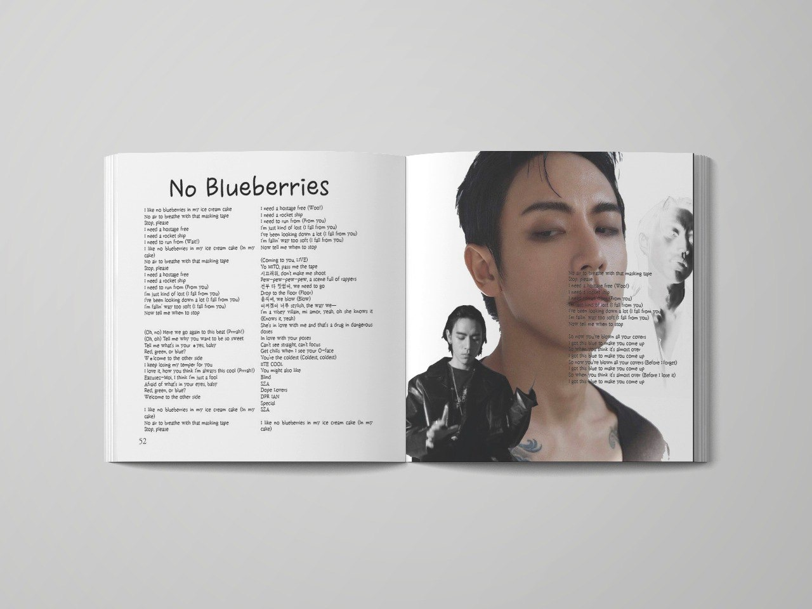

Проект авторской книги "SOLO"
Чтобы узнать музыкального исполнителя лучше нужно не только слушать, но и смотреть. В автор- ском издании собраны 14 соло исполнителей корейских k-pop и k-hip hop жанров. Читатель сможет не только увидеть ,а еще и послушать песни авторов в издании «SOLO».
 